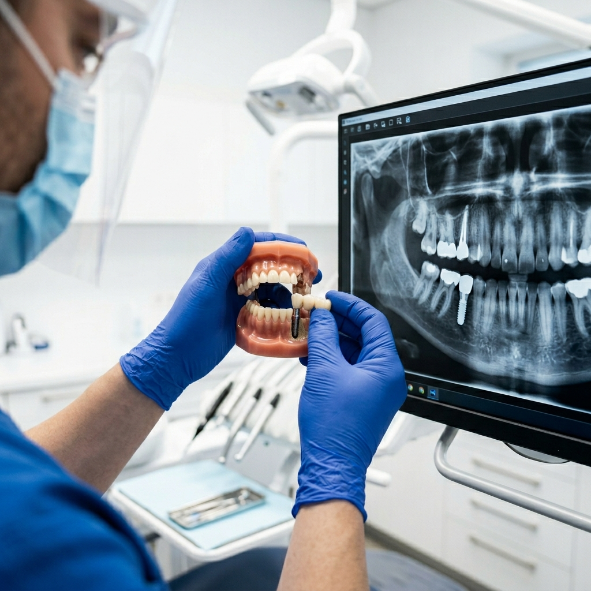
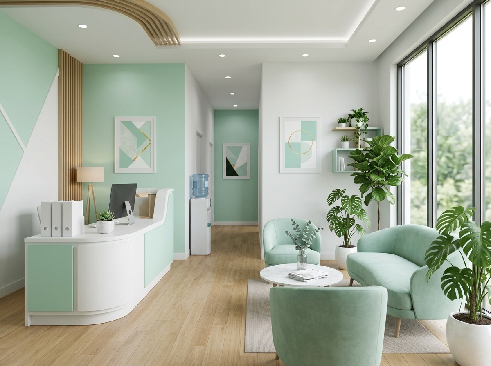

임플란트
정밀 진단을 기반으로 자연치아와 유사한 임플란트를 식립합니다.
상담 문의 →
클리닉 소개
쿠마치과는 과잉진료 없는 정직한 진단을 원칙으로 합니다. 모든 치료 계획은 충분한 설명과 동의 후 진행되며, 진료 기록은 투명하게 공유됩니다.
의료진 소개
"치아 하나하나의 가치를 존중합니다. 불필요한 시술은 권하지 않습니다."
자주 묻는 질문
뼈 상태에 따라 다르지만 보통 식립부터 보철 완료까지 2~4개월이 소요됩니다. 즉시 보철이 가능한 경우도 상담을 통해 안내드립니다.
네, 성인 교정도 가능하며 투명교정·설측교정 등 생활 패턴에 맞는 방식을 추천해드립니다.
정확한 비용은 구강 상태 진단 후 산정되며, 1차 상담에서 예상 견적을 투명하게 안내드립니다.
상담 문의
상담 내용은 외부에 공유되지 않으며, 전문의가 직접 회신드립니다.
전화 02-3456-7890
주소 서울 강남구 테헤란로 211
진료시간 월~토 09:30–19:00